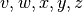
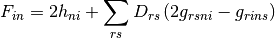
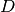

Hartree-Fock¶
Generalized Fock Matrix Elements¶
For the following, are inactive  are active, are virtual and are general orbitals.Lets consider:
and,
Now lets remember that the density matrices vanish if any of the indicies are a virtual orbital. If it is now choosen that one index is inactive, the following simplification can be made:
Now the generalized Fock matrix is given as:
Using the above expressions for the density matrix it can be written that:
Now lets consider the second sum only:
Now be relabelling  to
to  for the first sum:
for the first sum:
Giving the toal generalized Fock matrix:

The notatation of an inactive and active Fock matrix can now be introduces:
From the generalized Fock matrix it can be seen that if either  or is anactive we get, by using
or is anactive we get, by using  :
:
If both and are active the following is obtained:
Now since this covers the entire sum in the Generalized Fock matrix it can be expressed as:
Now lets consider the generalized Fock matrix if the first index is active:
The sums can be split up in an active and inactive contribution:
Now by using which holdes for one index inactive it is known that if the other index is active then  cannot be equal to . Now giving:
cannot be equal to . Now giving:
The first three index form can be manipulated as:
Now again by using the  relationship of inactive orbitals and reindexing it is found that:
Now the second three index sum, which by the relation and is found to be:
Now giving:
Here the inactive Fock matrix can be identified giving:
Here:
Finally for Hartree-Fock:
- Molecular Electronic-Structure Theory, Trygve Helgaker, Poul Jorgensen, Jeppe Olsen